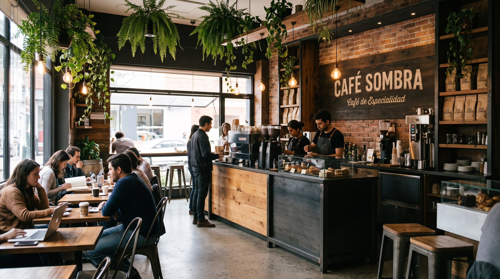

Café de Especialidad
Café Sombra
El arte de disfrutar una taza perfecta

El arte de disfrutar una taza perfecta
Fundada en 2022, Café Sombra nació del profundo amor por el café de altura y de la visión de crear un puente directo entre productores locales mexicanos y los verdaderos amantes del café de especialidad.

Lo que comenzó como una pequeña barra artesanal de café, hoy se consolida como un punto de encuentro para la comunidad en Toluca, destacándonos por la calidez en nuestro servicio y el rigor en cada taza.
Servir café de especialidad excepcional bajo estándares de comercio justo, impulsando el trabajo de cafeticultores locales y brindando una atmósfera inspiradora.
Convertirnos en la cafetería de especialidad referente en la región, reconocida por nuestra calidad técnica, compromiso ambiental y calidez humana.